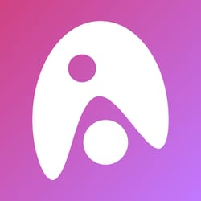
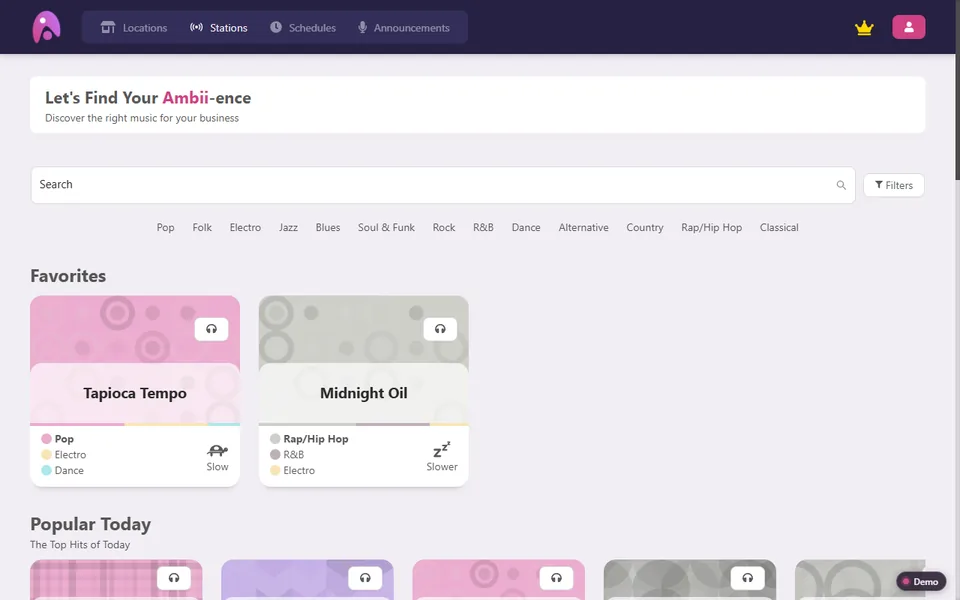
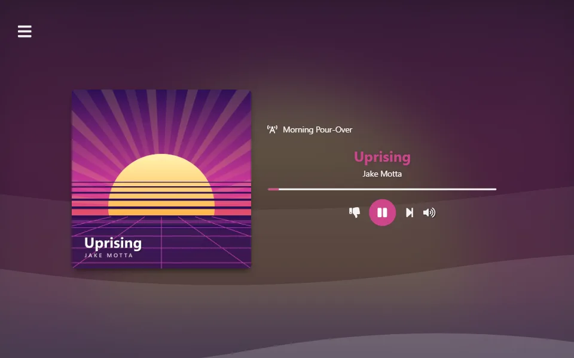
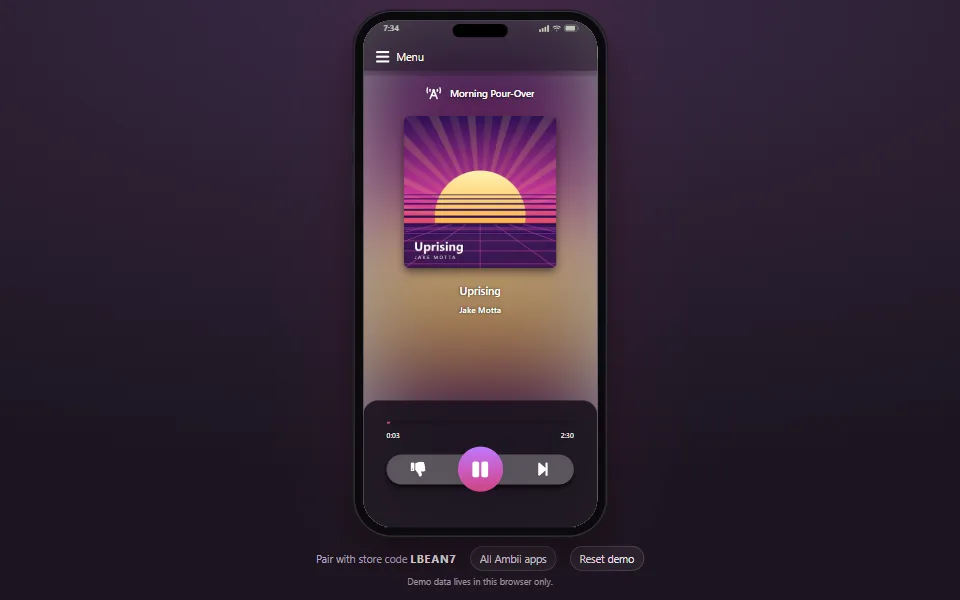

2019–2022 · Background music for business
Ambii Business
Music for cafés, shops and restaurants. The owner picked stations, schedules and announcements in a dashboard, and the player in each store, a web page or a phone app, played them.
The servers behind it are long gone, so the real apps run here on a stand-in I wrote for them. You're signed in as Maya, who runs the seven stores of Bean & Beat Coffee Co. Change whatever you like: it's kept in your browser and goes nowhere else.
-

Dashboard
Where a business chose its stations, built schedules, recorded announcements and kept an eye on every store.
Open the dashboard → -

Web player
The player a store ran on any computer: type the store's code and it plays. This link opens on Downtown Café.
Open the player → -

Phone app
The same player as an iPhone and Android app, with the dashboard built in. Here it runs in a phone frame.
Open the phone app →
Things to try
- Play a store. Open the web player for Downtown Café and press play. Stick around for a couple of minutes and a welcome announcement plays over the music.
- Change what it plays. In the dashboard's Stations, open one and assign it to Downtown Café. The player switches when the song ends, just as it always did.
- Make an announcement. Under Announcements, type one, pick a voice and some background music, set it to play today two minutes from now and assign it to Downtown Café. Press skip in the web player so it picks the new one up. At that minute the music fades down and your browser reads it out.
- Steal the store. Pair the phone app with LBEAN7 while the web player is on it, and watch them hand over.
- Open stores from a spreadsheet. Under Locations, Upload CSV adds a whole list of stores at once. There's a sample file to try it with.
- Start your own business. Open the dashboard as a new customer, set up your first store and play it. Sign in again to get back to Maya.
- Drop to the free plan. Cancel the subscription under Upgrade, the crown in the dashboard's menu: ads play between songs and the extra stores switch off. Subscribe again there to bring them back.
Store codes
- LBEAN7
- Downtown Café
- Plays a station
- LMKT42
- Market Street Kiosk
- Runs a schedule; another device has it
- LCSTR6
- Castro Street Café
- Runs a schedule; no player has it yet
- LJACK5
- Jack London Square
- Late-night schedule; the bar's iPad has it
- LPAVE8
- Palo Alto Roastery
- Weekend brunch schedule; a tablet has it
- LSURF8
- Santa Cruz Surf Shack
- Weekend brunch schedule; a tablet has it
- LGATE3
- Airport Pop-up
- Switched off, so players are turned away
What's different from the real thing
- The musicThe licensed catalogue the stations drew from is gone. My own tracks and free music by other artists, credited below, play instead.
- The voicesAnnouncements you make are read by your browser's voices instead of Google's. The ones that come with the demo are recordings.
- PaymentsNothing is charged and no card details are asked for. Subscribing uses a sample card.
- Sign-inYou're already signed in. Signing out and back in takes one click, no password.
Music credits
Besides 14 of my own tracks, the stations play 67 songs by 26 artists who share their music freely, under Creative Commons licences or in the public domain. Thank you, all of you. The covers you see in the apps are mine, made for the demo, not the artists' own.
Every song, where it's from and its licence
- 1000 Handz
- Andy G. Cohen
- Broke For Free
- Brylie Christopher
- congusbongus
- Doctor Turtle
- Ethos
- HoliznaCC0
- Jahzzar
- “Railroad's Whiskey Co.”, from Home · source · CC BY-SA 4.0
- “Going to”, from Home · source · CC BY-SA 4.0
- “Chiado”, from París, Lisboa · source · CC BY-SA 4.0
- “Siesta”, from Traveller's Guide · source · CC BY-SA 3.0
- “Take Me Higher”, from Tumbling Dishes Like Old-Man's Wishes · source · CC BY-SA 4.0
- “Roads that burned our boots”, from Blinded by Dust · source · CC BY-SA 4.0
- “Last Dance”, from Blinded by Dust · source · CC BY-SA 4.0
- Josh Woodward
- “Good to Go”, from The Simple Life · source · CC BY 4.0
- “Little Tomcat”, from The Wake · source · CC BY 4.0
- “Water in the Creek”, from The Wake · source · CC BY 4.0
- “Airplane Mode”, from The Beautiful Machine · source · CC BY 4.0
- “California Lullabye”, from The Beautiful Machine · source · CC BY 4.0
- “Follow the Road”, from The Beautiful Machine · source · CC BY 4.0
- “Afterglow”, from The Simple Life · source · CC BY 4.0
- “Morning Blue”, from The Simple Life · source · CC BY 4.0
- Kevin MacLeod
- “Bossa Antigua” · source · CC BY 4.0
- “Slow Burn” · source · CC BY 4.0
- “Gymnopedie No. 1” · source · CC BY 4.0
- “Sheep May Safely Graze - BWV 208” · source · CC BY 4.0
- “Fireflies and Stardust” · source · CC BY 4.0
- “Still Pickin” · source · CC BY 4.0
- “Wallpaper” · source · CC BY 4.0
- “Werq” · source · CC BY 4.0
- “Surf Shimmy” · source · CC BY 4.0
- “Surf Inspector” · source · CC BY 4.0
- “Disco Medusae” · source · CC BY 4.0
- “Chill Wave” · source · CC BY 4.0
- “Got Funk” · source · CC BY 4.0
- “Smooth Lovin” · source · CC BY 4.0
- “Island Meet and Greet” · source · CC BY 4.0
- Kimiko Ishizaka
- Komiku
- Lee Rosevere
- Mr Smith
- “Circles Round the Sun”, from Streamliner · source · CC BY 4.0
- “Hollow Body Blues”, from A New Roar · source · CC BY 4.0
- “Be Cool”, from Streamliner · source · CC BY 4.0
- “Sundown In Twang Town”, from Guitarista · source · CC BY 4.0
- “The Stevie Shuffle”, from A New Roar · source · CC BY 4.0
- “Neo Soul”, from A New Roar · source · CC BY 4.0
- Musopen
- Nihilore
- Pierce Murphy
- Primal Light
- Rolemusic
- Spinning Clocks
- TeknoAXE
- Thor Arisland
- Tours
- Yubatake
- Zane Little Music